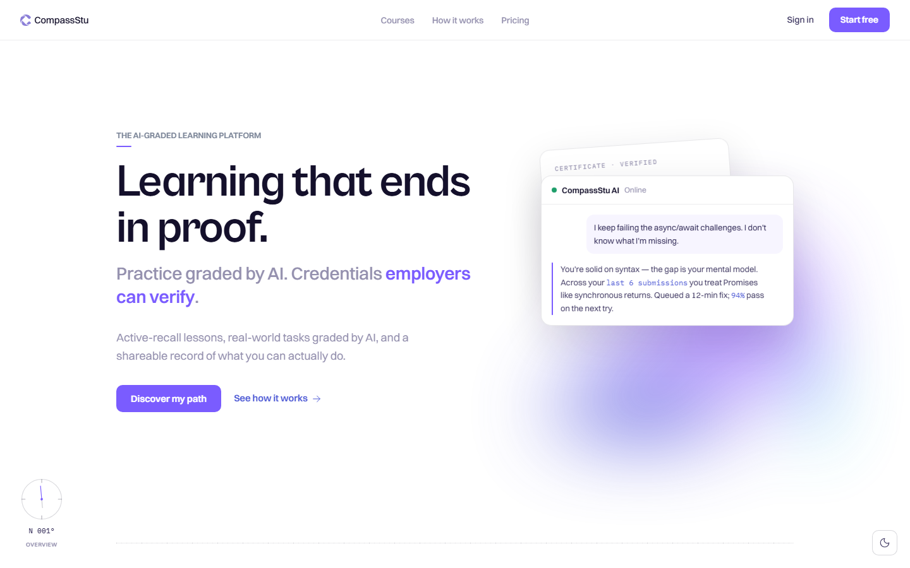
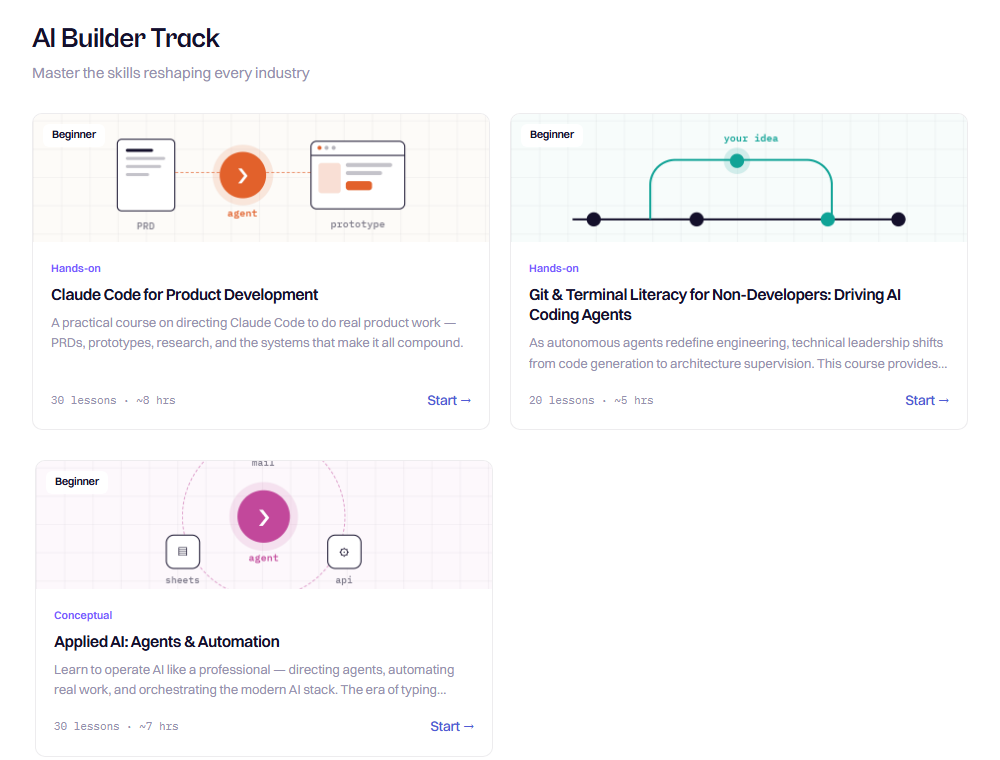
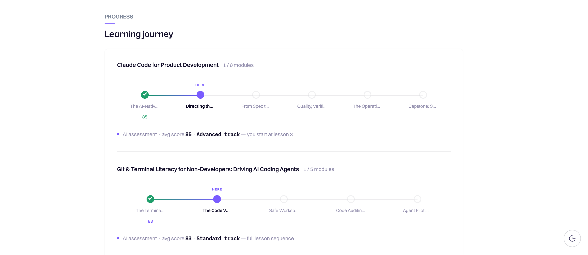
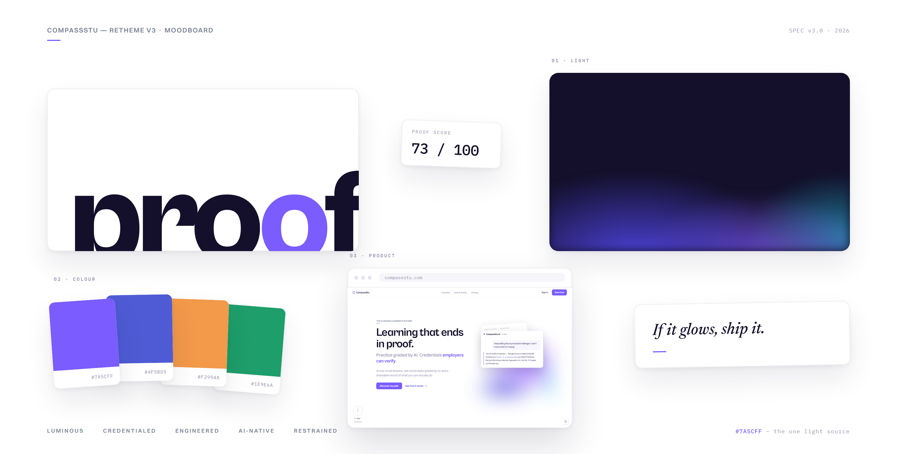
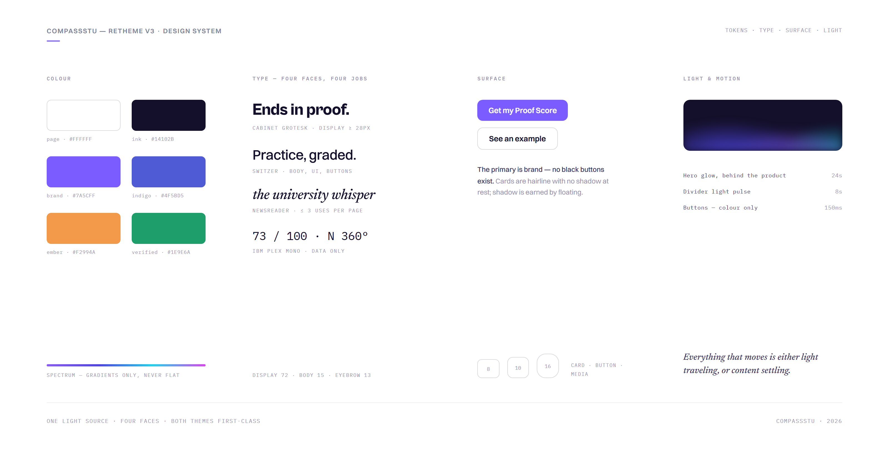
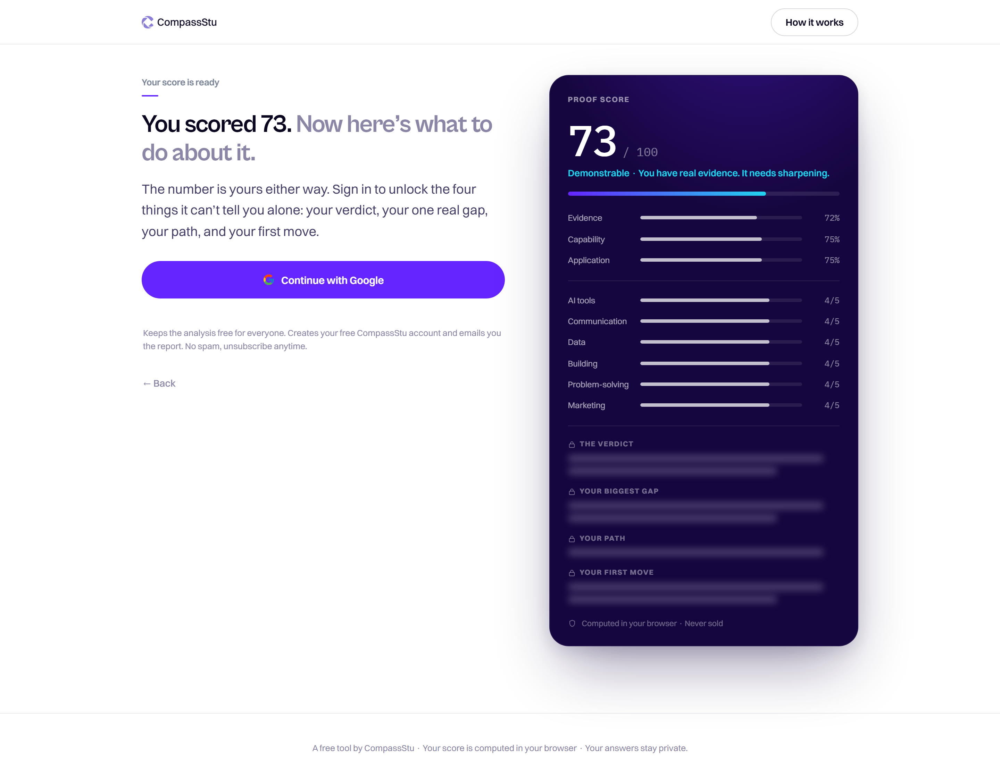
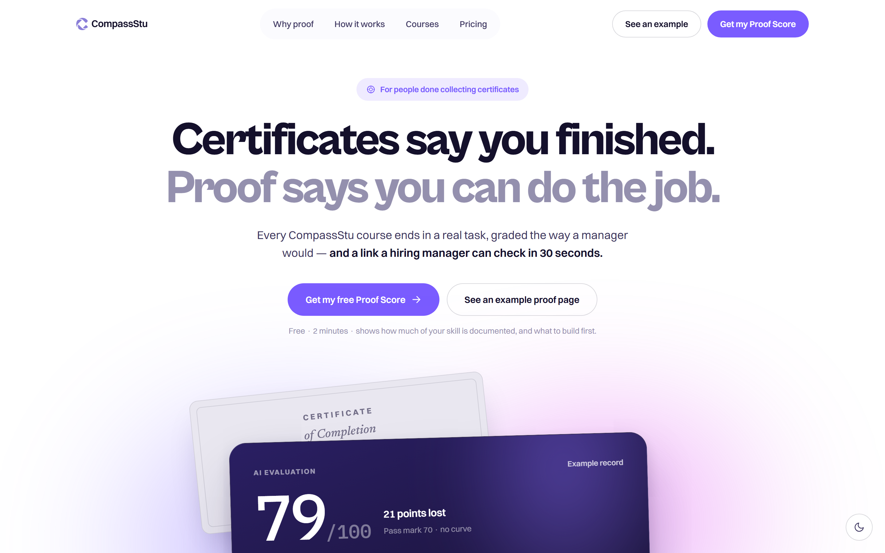
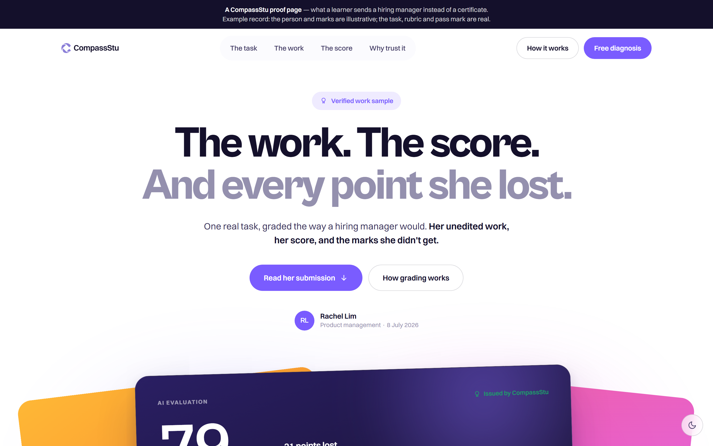

CompassStu


A learning platform built to produce candidates, not completions.
Most platforms measure progress in videos watched.
01 Overview
It measures work demonstrated — AI-graded against a four-dimension rubric, shareable as a single URL.
Time-stamped. Immutable.
One runtime. Three learning engines.
Adaptive paths. Fixed standard.
02 The Problem
A large, well-funded industry, broken at the seam that matters most — the handoff to a job.
Platforms compete on completions: hours watched, modules finished. None of it proves you can do the work — so the certificates go untrusted.
- What platforms count.
- Hours watched. Courses completed.
- What employers need.
- Work demonstrated. Standards met.


03 Product Thesis
We do not sell knowledge. We produce candidates.
- Learn.
- Active recall, not passive video.
- Simulate.
- AI-graded bridge tasks against a four-dimension rubric.
- Prove.
- A verifiable record, readable in one URL.

04 Three Learning Engines
The pipeline runs identically every time. What changes is the cognitive demand.
Concept Engine
For frameworks, persuasion, and judgment. Graded on clarity and structural depth.
Operator Engine
For execution and technical precision. Graded on correctness and elegance.
Analyst Engine
For data-driven work. Graded on methodology and rigor.
05 Learning Experience Design
A lesson lasts eight minutes — a three-panel page, a vocabulary of twelve cards.
The page
A fixed grid — module nav left, one card centre, tutor right. Only the card area scrolls.
The cards
Seven to twelve cards, each gating the next. The first required input arrives within forty-five seconds.
The close
A final mastery check, then handoff to the bridge task — where the work that earns the certificate begins.
06 Compass Tutor
An AI coach built into every lesson — course-scoped, bilingual, with every reply verified before it reaches the screen.
- Course-Aware Context.
- Scoped to the lesson. Never answers outside the curriculum.
- Bilingual.
- English or Mandarin, by course — no setting to switch.
- Teach-Back Mode.
- The learner explains it back; the AI grades comprehension and flags the gap.

07 Adaptive AI Engine
After each module, the learner’s average score on AI-graded work routes them automatically — Advanced (≥ 85), Standard (70–84), or Foundation (< 70). The bar for a certificate never moves; only the path adapts.
- Score-Based Routing.
- Every module completion recalculates the track from real graded work — no self-assessment, no manual review.
- Three Tracks, One Bar.
- Advanced skips straight to lesson 3; Foundation injects extra groundwork; the pass mark stays 70 for everyone.
- AI Path Diagnosis.
- A first-sign-in assessment builds a personalised course path before the learner ever picks a course.
The three tracks
The learner never chooses a track — their scores do. The assigned track is named right on their learning journey, with what it changes.
08 The Proof Layer
Every bridge task that clears its four-dimension rubric earns a permanent record — GPT-4o graded, timestamped, and posted to a single URL. The learner owns it; employers verify it in a click.
- Graded by GPT-4o.
- Four dimensions: relevance, structure, quality, depth. Localized for Mandarin courses.
- What comes back.
- A score, a verdict, specific feedback, one strength, one fix — every time.
- Pass threshold: 70.
- Up to five attempts; the record keeps the real score and count. Nothing hidden.
- Certificates are permanent.
- They survive any reset. Proof of work is never lost.
09 Learning Hub
Every lesson compounds into a personal knowledge base built entirely from your own work.
Most platforms forget you between sessions. CompassStu accumulates — every answer feeds four AI layers that grow on their own.
Role Fit Snapshot
Your certificates, scored against three target roles.
Knowledge Hub
AI notes from every lesson — ask them anything; they answer from your work, not the internet.
Ask my notesMy Playbook
AI extracts the methods inside your best submissions — your techniques, not generic best practice.
Growth Patterns
AI names your recurring strengths and blind spots, quoting your own words back.
Career Proof
Proof cards an employer reads: competencies, tier, evidence. Not a certificate — a case for your hire.
Shareable public link · employer-readable10 Pathway Ecosystem
We don’t sell courses. We build careers — one verified milestone at a time.
Isolated courses are a commodity — finish, certify, walk away with no map. CompassStu builds pathways from beginner to specialist, each tier unlocked only by AI-verified work.
- Category tracks, not catalogs.
- Each pathway maps a domain end-to-end; the platform routes on performance, not curation.
- High-demand pathways only.
- Three tracks — AI Product Development, Prompt & LLM Ops, Business Analysis. Depth over breadth.
- Retention locked by design.
- Mid-pathway you have verified records and a next milestone. Switching means starting over.
- $10/month, single tier.
- One flat price, just under market median. Betting on retention over ARPU.
AI Product Thinking
Problem framing, model selection, scoping. Assessed by a graded brief.
Prompt Systems & LLM Integration
Prompt systems, RAG, evaluation loops. Assessed by a graded pipeline.
AI Product Launch & Iteration
GTM, feedback loops, iteration cycles. Assessed by a launch retrospective.

11 System Map
Three layers, each owning a phase of the journey — from first sign-in to shareable proof of work.
Basic Nav Layer
Entry and routing — sign in, then browse or let Discover My Path build a pathway. Both converge at the first lesson.
Learning Exp Layer
Core delivery — lessons, bridge task, teach-back, and assessment, with Compass Tutor throughout.
Learning Outcomes Layer
Output and persistence — work feeds the Hub’s AI artefacts and the public profile.
12 Content Operation
An admin portal publishes courses end-to-end — no developer required. Content lives as data, never hardcoded.
- Markdown in, live courses out.
- The team writes markdown; a parser publishes to the database. No developer in the loop.
- Versioned and instant.
- Every publish is versioned for rollback and live on the next load.
- Feeds discovery automatically.
- Each publish feeds the discovery index — no manual tagging.

13 Tech Architecture
Infrastructure built so one person can run the entire platform.
A thin runtime over a database — content, configuration, and AI behaviour all live as data and ship without a deploy.
- Content is data, not pages.
- Every lesson and prompt lives in Postgres. Publishing never touches the codebase.
- AI behind the edge.
- Every model call runs through edge functions. Keys never reach the client.
- Zero-ops deployment.
- Vercel — push to ship, no servers. Budget spent on product, not infrastructure.
14 Brand & Visual Design
Restraint as a design position, not a limitation — first with one typeface, then with a system.
v1 was one typeface, one violet accent, alpha-based neutrals. It held the product together through launch — and ran out of range the moment the product had more to say.
v3 — the redesign
A full system, shipped across the live product in under a week.
- Eight production pages, one pass.
- Landing, catalog, pricing, how-it-works, course overview, profile, bridge tasks, learning hub. Proven by shipping it, not by a style guide.
- Four typefaces, self-hosted, on shared tokens.
- Cabinet Grotesk, Switzer, IBM Plex Mono, Newsreader. All data — scores, dates, counts — now reads in mono.
- One luminous signature per page.
- A single deliberate light event on each, instead of decoration everywhere.
- Colour became semantic.
- No red in the palette. A failed evaluation renders as ember — retryable, not broken. A pass renders as verified.
- Verified, not assumed.
- Both themes, desktop and 390 px, a static reduced-motion pass. Six native
alert()dialogs in auth became one inline, screen-reader-announced message.


Everything above is what I designed. Everything below is what the live product proved wrong.
15 Recalibrating the Grader
Four different submissions. Four identical 85s.
“Be encouraging” in the prompt, no anchors to score against — so the model found the safe middle and parked there.
A grade nobody can fail is not a grade. The whole product rests on this number.
- Anchored dimensions.
- Each dimension scores independently against written anchors — what a 30 looks like, what a 90 looks like.
- Computed, not generated.
- The model judges the dimensions; code applies the weights. Every score is auditable back to its parts.
- Evidence is a hard gate.
- No paste-blocking, no detection theatre. Below 50 on situational specificity caps at a fail, however fluent the prose. Pasted-and-polished fails. Messy-but-real passes.
- Submission 01 85
- Submission 02 85
- Submission 03 85
- Submission 04 85
- Submission 01 33
- Submission 02 58
- Submission 03 76
- Submission 04 92
16 Making the Positioning True
The pitch said your existing skill counts. The product still started you at lesson one.
From readiness check to Proof Score
The free diagnostic asked whether you were good enough. Wrong question — the people it was built for already are. It now measures whether you can show it: you’re not underqualified, you’re under-documented.
Printing the formula on the page bought a trade a black box never could: the number is free, forever. The interpretation is the sign-up. Then 43% of the copy went — every line that only restated its own label.
The Challenge route
Skip the lessons, go straight to the graded task. Same rubric, same pass bar. A failed challenge deep-links to the lesson that closes the gap — so the pitch lands when the learner feels it, not when a landing page claims it.
The lesson route
Learn → Simulate → Prove. Unchanged, and still the default.
The Challenge route
Straight to the graded, certificate-earning task. No shortcut on the standard — only on the syllabus.
Fail → the exact lesson that closes the gapProof Score · how it is computed
Deterministic. Printed on the page the visitor is reading.

17 Owning the Funnel
An ad platform will tell you what converted. It will never tell you where you lost them.
So the funnel became first-party — two new pages at the top, one session ID through all of it, and an event vocabulary the database refuses to get wrong.
- A real front door.
/startfor campaigns,/proof/exampleas the sample. Clean URLs, OG cards, live.- One joinable funnel.
- Landing and diagnosis share a session ID. Drop-off is visible per question, not per page — and the data is ours, not the ad platform’s.
- 17 events, enforced by the database.
- A
CHECKconstraint bounds the event names. A frontend typo fails loudly instead of quietly rotting the funnel. - One less page to maintain.
- Account management merged into pricing. The dead-end “Manage plan” became an inline panel, and a designed two-step cancel.
Campaign click
The last step the ad platform can see on its own.
/start
The campaign page. One promise, one action.
Proof Score
Drop-off instrumented per question, not just per page.
Sign-up
One joinable path, ad to account — every step queryable in our own database.


18 Operating Honestly
The fastest way to lose a user is to promise something the code does not do.
So I audited every customer-facing page against the live code and the live database — then went looking for what else I had assumed was true.
- Claims audited against the code.
- A “2-course limit” no code enforced. “Partner companies” that don’t exist. Both deleted. The copy now says only what the system does.
- A live leak, found by probing — not reading.
- The policies said the table was protected. Production said otherwise: Postgres views run with their owner’s privileges, so analytics views over it were readable with the public anon key. Closed with
security_invokerand explicit revokes. - Wedge, not moat.
- Learn → Simulate → Prove is a real differentiator and not yet defensible. What would compound — outcomes data, a two-sided employer network, tamper-evident proof — is named, and none of it is built.
19 Results
Designed, built, and shipped solo in three months.
It runs end-to-end today — adaptive lessons, AI grading, verifiable proof, and a no-developer CMS, in English and Mandarin. Part Two shipped on top of it, live.
- What shipped.
- The full loop — auth, runtime, AI grading, permanent certificates, CMS — by one person.
- What Part Two changed.
- The grader, the entry point, the funnel, the copy. Not the loop. The design held; the calibration didn’t — and calibration is what only shipping finds.
- What I’d measure first.
- Whether the proof carries: do employers open the link, and does it change a screening decision.
- What I’d revisit.
- The five-attempt advance. The evidence gate stops fluent-but-empty work, but attempts still buy their way toward a fixed standard.
- What’s next.
- The employer side: rubric evidence and work samples, built for a ninety-second read.